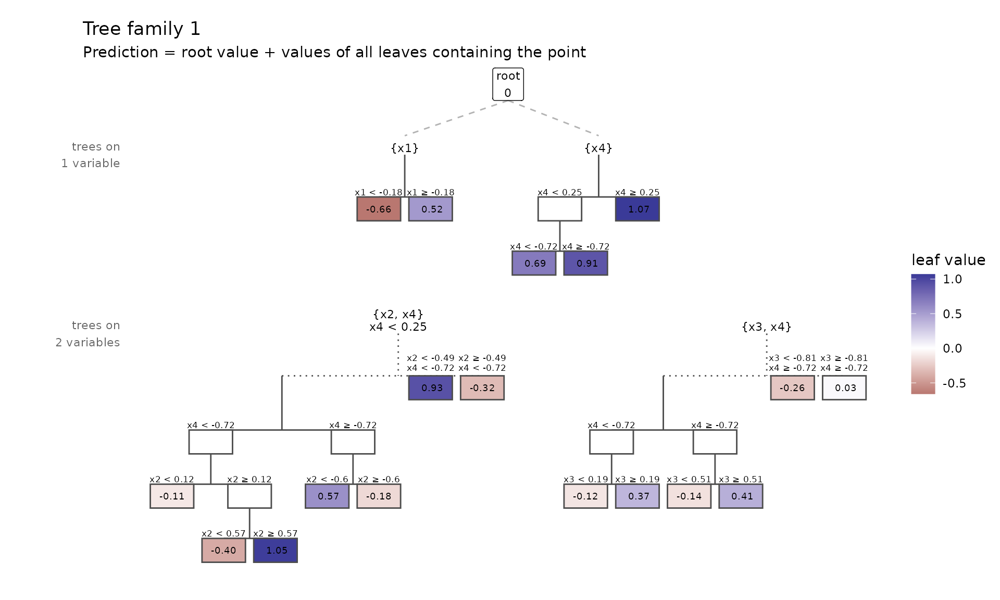
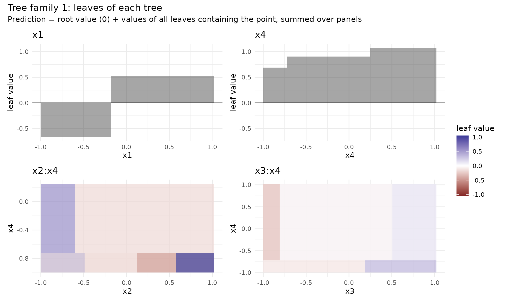
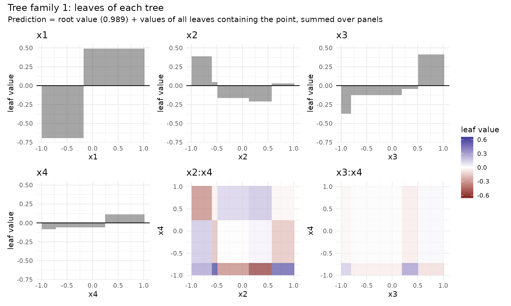

A random planted forest is an average of tree families, each grown on a bootstrap sample of the training rows. What makes it interpretable is the family: a sum of trees, each of which splits on its own small set of predictors. This article shows one family as it grows, then the settings that control the growth.
Data
The outcome depends on x1, x2 and
x3 through main effects of different shapes, and on
x1 and x2 jointly through a product;
x4 has no effect.
One tree family
To look at a family, we fit a forest of a single family with 10
splits, of at most two predictors per tree, and keep the forest
(prune = FALSE):
set.seed(6)
small <- rpf(y ~ ., data = sim, max_interaction = 2, n_families = 1, n_splits = 10, prune = FALSE)
plot(small)
The family starts with the root, a single leaf of value 0 that covers all the data. Every split takes one leaf of one tree, a predictor and a threshold, and fits the two halves to what the family does not yet explain (for regression, the residuals):
- If the tree already splits on that predictor, the leaf is replaced by its two halves.
- If it does not, the two halves go to the tree on the tree’s predictors plus the new one, which is created if needed, and the leaf stays where it was, so that it can be split again on other predictors.
So the family grows trees on single predictors from the root, trees
on pairs from those, and so on. max_interaction caps how
many predictors a tree may have. The prediction of the family for a
point is the sum of the values of all leaves, in all trees, that contain
it; the forest averages the families.
The diagram shows the trees in rows by the number of predictors they
split on, with each leaf coloured by its value.
plot(type = "boxes") draws the same leaves in the space of
the predictors, one panel per tree:
plot(small, type = "boxes")
From trees to components
The trees are not yet the components of the model. Leaves of
different trees overlap, so an effect can be spread over several trees:
the quadratic effect of x2 can sit in the tree on
x2 alone, or in the tree on x1 and
x2. Purification moves every effect to the lowest-order
tree it belongs to, without changing the family’s prediction:

Now each panel is one component of this family, and the root value is its intercept. A family of ten splits is a rough model: it can miss a true effect or grow an interaction the data do not have. The other families, grown on other bootstrap samples with other random draws, do not share these errors. Averaging the components over 200 families, with the number of splits chosen for the data, and pruning the small ones gives the estimates of Reading the model.
max_interaction
max_interaction decides which components the model can
have: 1 gives an additive model, 2 adds
pairwise interactions, 3 (the default) three-way
interactions, and 0 sets no limit. A lower order is easier
to read but cannot represent interactions of higher order; a higher one
spreads the splits over many more possible components, and costs more
time.
To see the difference, we add a three-way interaction to the outcome and fit the default model at each order, then compare the error on new data:
make_data <- function(n) {
d <- data.frame(matrix(runif(n * 5, -1, 1), ncol = 5, dimnames = list(NULL, paste0("x", 1:5))))
d$y <- sin(pi * d$x1) + d$x2 + 2 * d$x1 * d$x3 + 3 * d$x2 * d$x3 * d$x4 + rnorm(n, sd = 0.3)
d
}
set.seed(3)
train <- make_data(1000)
test <- make_data(2000)
rmse <- sapply(1:3, function(order) {
m <- rpf(y ~ ., data = train, max_interaction = order, n_families = 50, nthreads = 2)
sqrt(mean((test$y - predict(m, test)$.pred)^2))
})
data.frame(max_interaction = 1:3, test_rmse = round(rmse, 3))
#> max_interaction test_rmse
#> 1 1 0.957
#> 2 2 0.666
#> 3 3 0.352The noise has standard deviation 0.3, the lowest error any model can reach. Only order 3 can hold the three-way term.
The split search
Each round of a family’s growth draws some possible splits as candidates, tries a few thresholds for each, and makes the best split among them. Five settings control this search:
-
split_structure: what a candidate is (see below). -
share_candidates: the share of all possible splits drawn as candidates each round, at mostmax_candidates(50). -
n_try_split_points: how many thresholds are tried per candidate. -
split_decay_rate(aging): a possible split that was a candidate but not chosen ages by one; possible splits are drawn with weightexp(-split_decay_rate * age), so the draw moves on to splits not yet tried.0draws uniformly. -
min_leaf_rows: the fewest rows of the bootstrap sample on each side of a split, so in every leaf (1, no limit, by default).
The more candidates and thresholds a round tries, the greedier the
search. For the default structure, a search that is not very greedy is
often better: the default tries 3 thresholds and 10% of the possible
splits per round. rpf(tune = TRUE) searches the greediness
and min_leaf_rows out of bag for your data (see The number of splits and further
tuning).
Split structures
split_structure |
a candidate is | its thresholds |
|---|---|---|
"leaf" (default) |
a leaf and a predictor |
n_try_split_points of the leaf’s distinct values |
"leaf_binned" |
a leaf and a predictor | boundaries of quantile bins, computed once per predictor; faster on large data |
"tree_then_leaf" |
a tree and a predictor |
n_try_split_points times: a leaf of the tree, drawn by
its number of possible thresholds, and one threshold in it |
"tree_then_all_leaves" |
a tree and a predictor | every leaf of the tree, n_try_split_points thresholds
each |
"target_tree_then_leaf" |
the tree the split grows into |
n_try_split_points times: a leaf and predictor, then
one threshold |
"leaf" is the default and the structure the defaults
were chosen for; the others default to 10 thresholds and 40% of the
candidates. ?rpf describes each structure in detail.
Constraining interactions
interaction_constraints restricts which predictors may
share a tree, as in xgboost: a tree is grown only if its predictors are
a subset of one of the given sets.
constrained <- rpf(
y ~ ., data = sim, interaction_constraints = list(c("x1", "x2"), c("x3", "x4")),
n_families = 50, nthreads = 2
)
constrained$components[, c("component", "share", "kept")]
#> component share kept
#> 1 x1 0.3321078983 TRUE
#> 2 x2 0.2575106612 TRUE
#> 3 x3 0.0559141664 TRUE
#> 4 x4 0.0001174298 FALSE
#> 5 x1:x2 0.3411360769 TRUE
#> 6 x3:x4 0.0002180949 FALSEThe forest has no component that joins a predictor of one set with
one of the other, such as x1:x3; of the components it has,
pruning keeps those large enough.
Randomness and reproducibility
A family’s randomness is its bootstrap sample and its draws of
candidates and thresholds. With the same seed, rpf() gives
the same forest on the same platform, with any number of threads.
Another platform can give another forest for the same seed, because the
C++ standard libraries draw random integers differently.
The candidates of "leaf" are drawn by a fast draw that
keeps the weights in a tree between rounds.